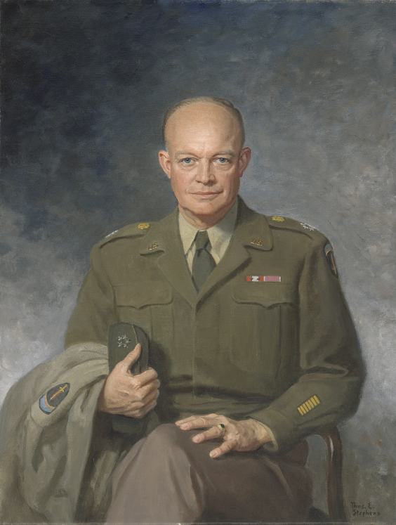

Inter-art Connection
Dwight D. Eisenhower
I chose a portrait of Eisenhower during World War II because his role as a military leader of Allied forces is both historically and thematically related to my TAL book: “Slaughterhouse Five”. Although Eisenhower led the D-Day invasion in 1944 which propelled the war towards its conclusion, his five year long military career from lieutenant to supreme commander was inevitably stained with destruction and tragedy. The major historical event in “Slaughterhouse Five” is the Dresden bombing of 1945 which also portrays the horrible bloodshed and needless killings experienced in war. In the novel, Billy is traumatized by his experiences in Germany – most significantly the Dresden bombing – and throughout his story he attempts to deal with the damage by concluding the trivial nature of time when he can leap to whenever. He propagates this idea to include death as a trivial matter as well using the reasoning that he can simply go to a point in time when someone dead was still alive. In addition, he shelves potential regret by concluding that free will is an illusion, as “among the things [he] could not change were the past, the present, and the future” (77). Billy’s internal struggle that shapes the book’s conflict is a pinpoint of the theme of destruction and tragedy personified by World War II and subsequently Eisenhower.